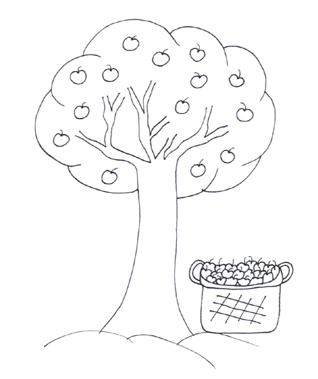
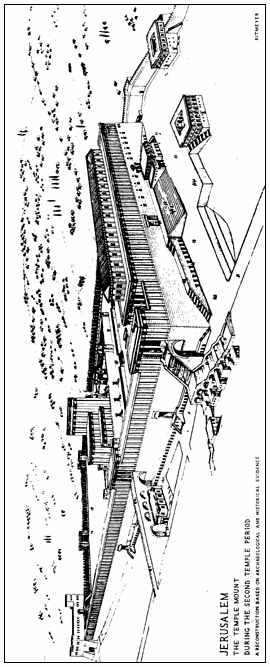

Read the lessons at the Vanderbilt Library website: http://divinity.lib.vanderbilt.edu/lectionary/BPentecost/bProper28.htm
Read
the lessons at the Vanderbilt Library website:
http://divinity.lib.vanderbilt.edu/lectionary/BPentecost/bProper28.htm
Elementary School Pew-work
Unscramble the bold words:
tWcha
________ out and don't let anyone fool you! 6Many will
come and mlcai ________ to be me. They will use my enam
________ and oolf ________ many people.
7When
you hear about sraw ________ and threats of wars, don't be
draaif________ . These things will have to happen rfist
________, but that isn't the end. 8Nations and kngdmios
________ will go to war against each other. There will be
sekaesquthar ________ in many places, and people will starve
to death. But this is just the beginning of slebrtou ________
.
A N D L E F T B B O F
|
DISCIPLES BUILDINGS TEACHER ANOTHER THROWN TEMPLE STONES THESE LARGE JESUS GREAT ASKED WILL WHAT UPON THEN SAID NRSV MARK LOOK LEFT HERE DOWN CAME YOU SEE OUT HIS HIM AND ALL OF BE |
 |
1. What does Jesus say will happen to the Temple?
__________________________________________________________________________
2. What are some physical signs of the last days?
__________________________________________________________________________
3. What will happen to Jesus' followers?
__________________________________________________________________________
4. What will keep Jesus' followers safe? _________________________________________
